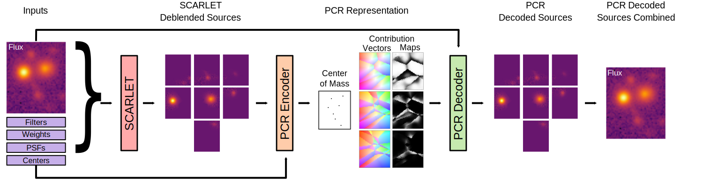
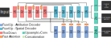

Abstract
Astronomical source deblending is the process of separating the contribution of individual stars or galaxies (sources) to an image comprised of multiple, possibly overlapping sources. Astronomical sources display a wide range of sizes and brightnesses and may show substantial overlap in images. Astronomical imaging data can further challenge off-the-shelf computer vision algorithms owing to its high dynamic range, low signal-to-noise ratio, and unconventional image format. These challenges make source deblending an open area of astronomical research, and in this work, we introduce a new approach called Partial-Attribution Instance Segmentation that enables source detection and deblending in a manner tractable for deep learning models. We provide a novel neural network implementation as a demonstration of the method.
Highlights
-
We developed a new approach for the detection and
deblending of astronomical sources.
We propose a new format called the Partial Contribution Representation (PCR) which encodes the locations of the sources and the flux that the closest \(n\) sources contribute to any pixel \([i,j]\). The PCR encodes a variable number of sources in a fixed dimensional representation. The fixed dimensions of the PCR representation makes it tractable to deep learning.
 -
We developed a novel neural network architecture, called
Morpheus-Deblend , that predicts the PCR encoding of an image using the flux only.Inprired by the approach used in (Cheng, et al), Morpheus uses a shared encoder with multiple decoders. By Predicting the PCR using flux only, Morpheus-Deblend can perform sophisticated deblending in the style of SCARLET, but requiring less inputs than SCARLET.

Ackowledgements
Ryan would like to thank Roberto Manduchi for helpful conversations. Brant acknowledges support from NASA contract NNG16PJ25C and grant 80NSSC18K0563. The authors acknowledge use of the lux supercomputer at UC Santa Cruz, funded by NSF MRI grant AST 1828315.